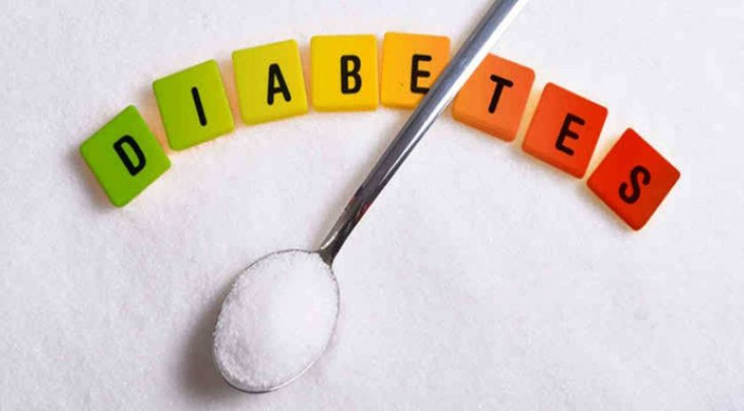
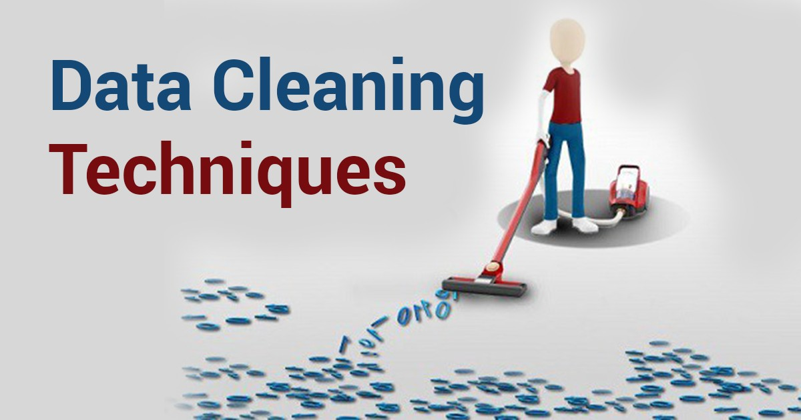
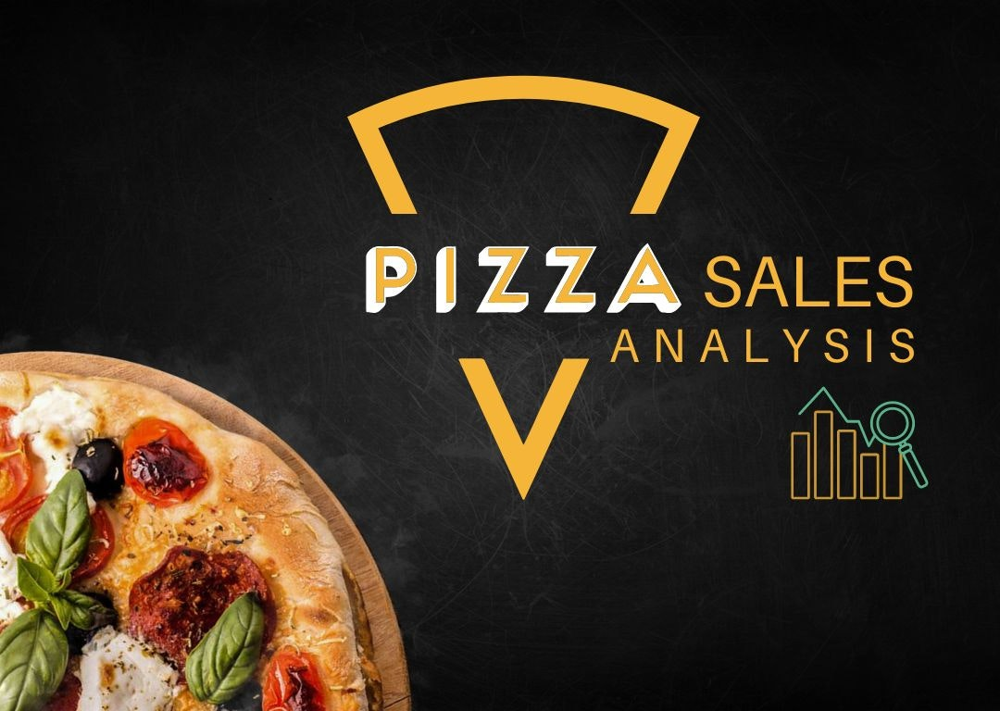

Developed and evaluated multiple machine learning models to predict diabetes using the PIMA Diabetes dataset.
Applied data preprocessing, feature engineering, and SMOTE for class balancing.
Ensemble models like CatBoost and Gradient Boosting achieved 94% accuracy and 0.99 ROC-AUC score.
Identified key risk factors such as glucose levels, BMI, and age.
This project highlights the practical use of AI in healthcare for early diabetes detection.
PYTHON is the primary language used for this project.


This project involved cleaning and preparing a real-world tech layoffs dataset using SQL in MySQL Workbench.
The raw dataset contained inconsistencies such as extra spaces in text fields, improperly formatted dates, duplicate rows, and missing values.
I performed various data cleaning steps including trimming text fields, converting date strings into proper date formats using STR_TO_DATE(), removing duplicates with CTEs, handling null values, and ensuring each column had the correct data type.
These transformations helped standardize the data and make it suitable for analysis, reporting, and future visualization projects.

This project involved cleaning and preparing a real-world tech layoffs dataset using SQL in MySQL Workbench.
The raw dataset contained inconsistencies such as extra spaces in text fields, improperly formatted dates, duplicate rows, and missing values.
I performed various data cleaning steps including trimming text fields, converting date strings into proper date formats using STR_TO_DATE(), removing duplicates with CTEs, handling null values, and ensuring each column had the correct data type.
These transformations helped standardize the data and make it suitable for analysis, reporting, and future visualization projects.